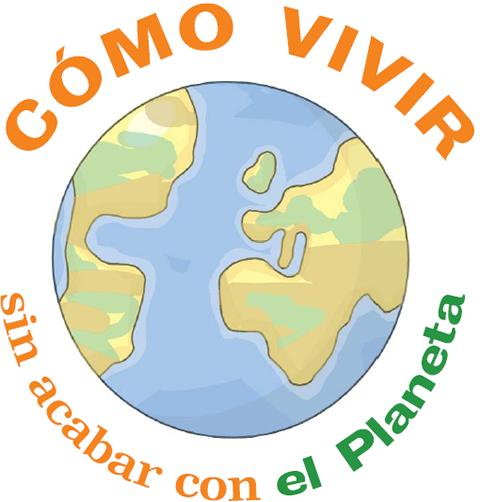

Qué podemos hacer para cuidar nuestro planeta?

Usa el transporte público.Los viajes en coche suponen la mitad de las emisiones totales de CO2 procedentes del sector del transporte y la mayor parte se genera en los viajes de casa al trabajo o a la escuela, y viceversa.
Consume productos con certificación ecológica.La garantía de que un producto sea de “producción ecológica” nos informa de que nos llevamos a casa comida sana. Una explotación agrícola o ganadera con el sello de producción ecológica no contamina los ríos, lagos con pesticidas y proporciona a los animales alimentos naturales.
Consume alimentos de temporada.Ahora en los supermercados se abastecen de productos traídos desde lejos. Esto requiere grandes cantidades de energía producirlos. Los alimentos autóctonos y de temporada requieren menos energía tanto es su cultivo como en su transporte.
Apaga la luzLas habitaciones que no se utilizan deberían permanecer a oscuras. Y se deben sustituir las bombillas de toda la casa por unas de bajo consumo.
Usa el lavavajillas en lugar de lavar los platos a mano.Lavar los platos a mano con agua caliente puede resultar hasta un 60% más caro.
Recicla.El reciclaje es una de las maneras más fáciles de combatir el Calentamiento Global
Usa riego por goteo en tu jardínLos sistemas de riego por goteo son eficaces un 90% mientras que los sistemas tradicionales apenas llegan al 60%.
Compost.¡Devuelve tu basura orgánica a donde pertenece, a la tierra!
Menos plásticos.Las bolsas de plástico y botellas que no se reciclan acaban en el agua y sobre el terreno en el que persisten durante cerca de 100 años.
Plantar árboles en su jardín y la comunidad.Todo el mundo sabe que la plantación de árboles puede ayudar al medio ambiente. Los árboles secuestran las emisiones de CO2, reduciendo al mínimo los efectos del calentamiento global.